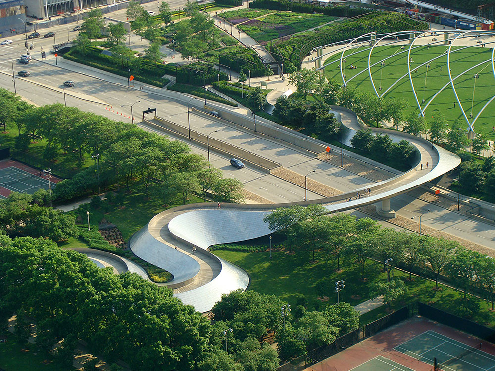
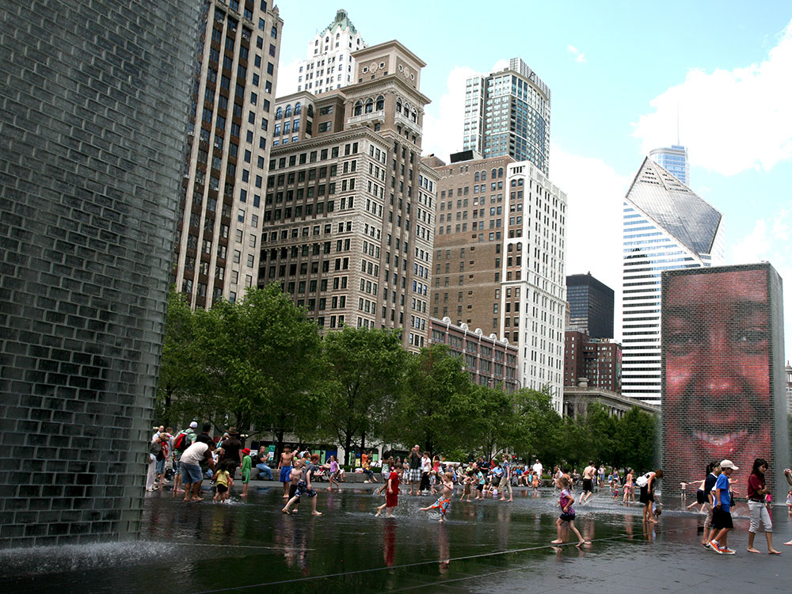
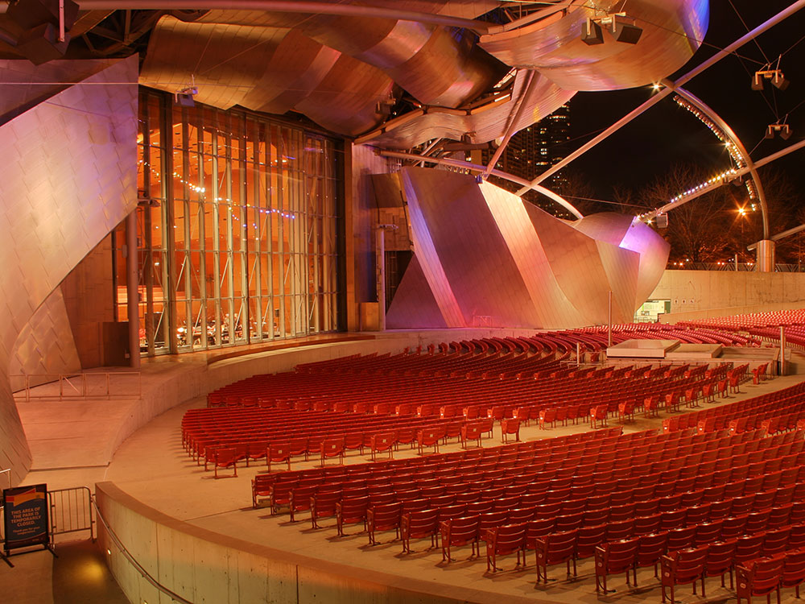
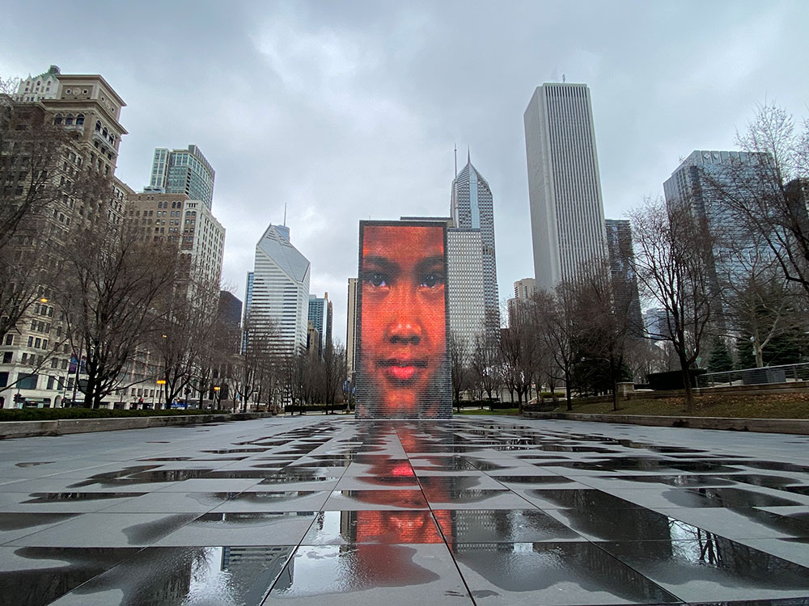
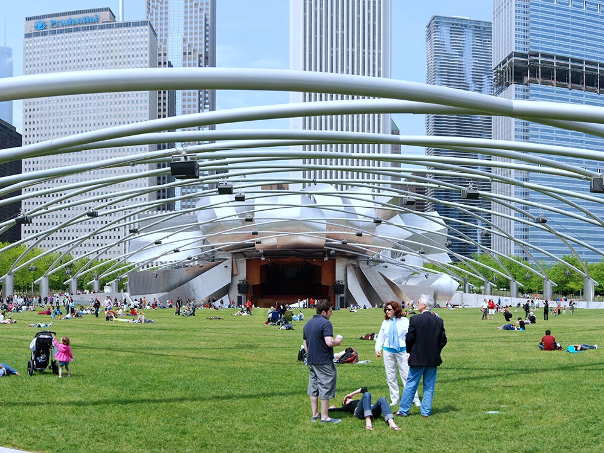
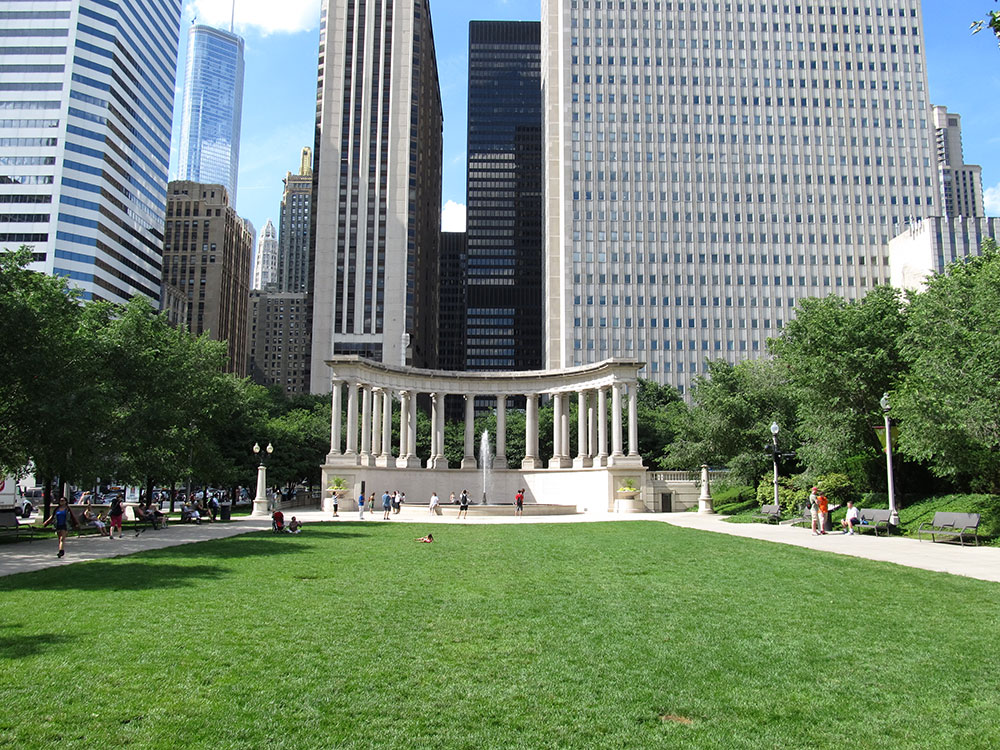

Park located in the Loop community area of Chicago and features a variety of public art has become the number one tourist attraction in the Midwestern United States
General Information
How to Get There
From Downtown Chicago (1 mi): Head to Michigan Avenue and Randolph Street at the northwest corner of Grant Park and enter at 201 E. Randolph Street to reach Cloud Gate and the Jay Pritzker Pavilion.
Overview
Millennium Park is a public park located in the Loop community area of Chicago. The park was intended to celebrate the third millennium and is a prominent civic center near the city's Lake Michigan shoreline that covers a 24.5-acre (99,000 m2) section of northwestern Grant Park. The park, which is bounded by Michigan Avenue, Randolph Street, Columbus Drive and East Monroe Drive, features a variety of public art. As of 2009, Millennium Park trailed only Navy Pier as a Chicago tourist attraction and by 2017 it had become the number one tourist attraction in the Midwestern United States.
Planning of the park began in October 1997. Construction began in October 1998, and Millennium Park was opened in a ceremony on July 16, 2004. Millennium Park features the Jay Pritzker Pavilion, Cloud Gate, the Crown Fountain, the Lurie Garden, and various other attractions. The park is connected by the BP Pedestrian Bridge and the Nichols Bridgeway to other parts of Grant Park. Because the park sits atop a parking garage and the commuter rail Millennium Station, it is considered the world's largest rooftop garden.
Millennium Park is a portion of the 319-acre (1.3 km2) Grant Park, known as the "front lawn" of downtown Chicago, and has four major artistic highlights: the Jay Pritzker Pavilion, Cloud Gate, the Crown Fountain, and the Lurie Garden. Millennium Park is successful as a public art venue in part due to the grand scale of each piece and the open spaces for display. A showcase for postmodern architecture, it also features the McCormick Tribune Ice Skating Rink, the BP Pedestrian Bridge, the Joan W. and Irving B. Harris Theater for Music and Dance, Wrigley Square, the McDonald's Cycle Center, the Exelon Pavilions, the AT&T Plaza, the Boeing Galleries, the Chase Promenade, and the Nichols Bridgeway.
The centerpiece of Millennium Park is the Jay Pritzker Pavilion, a bandshell designed by Frank Gehry. The pavilion has 4,000 fixed seats, plus additional lawn seating for 7,000; the stage is framed by curving plates of stainless steel, characteristic of Gehry. It was named after Jay Pritzker, whose family is known for owning Hyatt Hotels and was a major donor. The Pritzker Pavilion is Grant Park's outdoor performing arts venue for small events, and complements Petrillo Music Shell, the park's older and larger bandshell. The pavilion is built partially atop the Harris Theater for Music and Dance, the park's indoor performing arts venue, with which it shares backstage facilities.
The AT&T Plaza is a public space that hosts the Cloud Gate sculpture. The plaza opened in July 2004 with the unveiling of the sculpture during the grand opening weekend of the park. The sculpture and the AT&T Plaza are located on top of Park Grill, between the Chase Promenade and McCormick Tribune Plaza & Ice Rink. Cloud Gate, dubbed "The Bean" by Chicagoans because of its legume-like shape, is a three-story reflective steel sculpture. The first public artwork in the United States by world-renowned artist Anish Kapoor. Composed of 168 stainless steel plates welded together, its highly polished exterior has no visible seams. It is 33 by 66 by 42 feet (10 m × 20 m × 13 m) and weighs 110 short tons (100 t; 98 long tons). Its smooth shape and mirror-like surface were inspired by liquid mercury. It reflects the city skyline, particularly the historic Michigan Avenue "streetwall", and the sky. It provides striking reflections of visitors, who can walk around and under its 12-foot (3.7 m) high arch. On the underside is the "omphalos" (Greek for "navel"), a concave chamber that warps and multiplies reflections. The sculpture builds upon many of Kapoor's artistic themes, and is a popular photo subject with tourists.
The Crown Fountain is an interactive work of public art and video sculpture, named in honor of Chicago's Crown family and opened in July 2004. It was designed by Catalan conceptual artist Jaume Plensa and executed by Krueck and Sexton Architects.[87][88] The fountain is composed of a black granite reflecting pool placed between a pair of transparent glass brick towers. The towers are 50 feet (15 m) tall, and use light-emitting diodes behind the bricks to display digital videos on their inward faces.
Weather permitting, operating from May to October, water intermittently cascades down the two towers and spouting through a nozzle on each tower's front face. To achieve the effect in which water appears to be flowing from subjects' mouths, each video has a segment where the subject's lips are puckered, which is then timed to correspond to the spouting water, reminiscent of gargoyle fountains; this happens roughly every five minutes.
The Lurie Garden is a 2.5-acre (10,000 m2) public garden located at the southern end of Millennium Park; designed by landscape architecture firm GGN (Gustafson Guthrie Nichol), Piet Oudolf, and Robert Israel, it opened on July 16, 2004. The garden is a combination of perennials, bulbs, grasses, shrubs and trees. It is the featured nature component of the world's largest green roof.
The McCormick Tribune Plaza & Ice Rink is a multipurpose venue located along the western edge of Millennium Park opposite the streetwall of the Historic Michigan Boulevard District. On December 20, 2001, it became the first attraction in Millennium Park to open, a few weeks ahead of the Millennium Park underground parking garage. For four months a year, it operates as McCormick Tribune Ice Rink, a free public outdoor ice skating rink. It is generally open for skating from mid-November until mid-March.
For the rest of the year, it serves as The Plaza at Park Grill or Park Grill Plaza, Chicago's largest al fresco dining facility. The 150-seat outdoor restaurant offers scenic views of the park, and hosts various culinary events and musical performances during its months of operation.
The Park Grill Plaza is affiliated with the 300-seat indoor Park Grill restaurant, located beneath the AT&T Plaza and Cloud Gate. The Park Grill is the only full-service restaurant in Millennium Park and opened on November 24, 2003.
The BP Pedestrian Bridge is a girder footbridge over Columbus Drive that connects Millennium Park with Maggie Daley Park (formerly, Daley Bicentennial Plaza), both parts of the larger Grant Park. The pedestrian bridge is the first bridge Gehry designed to be built, and was named for BP plc.It opened on July 16, 2004, along with the rest of Millennium Park. Gehry had been courted by the city to design the bridge and the neighboring Jay Pritzker Pavilion, and eventually agreed to do so after the Pritzker family funded the Pavilion. The bridge is known for its aesthetics, and Gehry's style is seen in its biomorphic allusions and extensive sculptural use of stainless steel plates to express abstraction.
The Joan W. and Irving B. Harris Theater for Music and Dance is a 1525-seat theater for the performing arts located along the northern edge of Millennium Park. Constructed in 2002-03, it is the city's premier performance venue for small- and medium-sized performance groups, which had previously been without a permanent home and were underserved by the city's performing venue options. The theater was named for its primary benefactors, Joan and Irving Harris. It serves as the park's indoor performing venue, a compliment to Jay Pritzker Pavilion, which hosts the park's outdoor performances. Among the regularly featured local groups are the Joffrey Ballet, Hubbard Street Dance Chicago and Chicago Opera Theater.
Wrigley Square is a public square located in the northwest corner of Millennium Park near the intersection of East Randolph Street and North Michigan, across from the Historic Michigan Boulevard District. It contains the Millennium Monument, a nearly full-sized replica of the semicircle of paired Greek Doric-style columns (called a peristyle) that originally sat in this area of Grant Park between 1917 and 1953. The square also contains a large lawn and a public fountain. The William Wrigley, Jr. Foundation contributed $5 million for the monument and square, which was named in its honor.
McDonald's Cycle Center was sponsored by McDonald's after the park opened. The McDonald's Cycle Center is a 300-space heated and air conditioned indoor bike station located in the northeast corner of Millennium Park. The facility provides lockers, showers, a snack bar with outdoor summer seating, bike repair, bike rental and other amenities for downtown bicycle commuters and utility cyclists. The bike station also accommodates runners and in-line skaters.
The Exelon Pavilions are a set of four solar energy-generating structures in Millennium Park. The pavilions provide sufficient energy to power the equivalent of 14 Energy star-rated energy-efficient houses in Chicago. The pavilions were designed in January 2001 and construction began in January 2004. The Southeast and Southwest Exelon Pavilions (jointly the South Exelon Pavilions) along Madison Street were completed and opened in July 2004, and flank the Lurie Garden. The Northeast and Northwest Exelon Pavilions (jointly the North Exelon Pavilions) flank the Harris Theater along Randolph Street and were completed in November 2004, with a grand opening on April 30, 2005. Besides producing energy, three of the four pavilions provide access to the park's underground parking garages and the fourth serves as the park's welcome center.
The Boeing Galleries are a pair of outdoor exhibition spaces within Millennium Park; they are located along the south and north mid-level terraces, above and east of Wrigley Square and the Crown Fountain. They were added after the park opened; in March 2005. The galleries, which were built between March and June 2005, have hosted grand-scale art exhibits, some of which have run for two full summers.
The Chase Promenade is an open-air tree-lined pedestrian walkway in Millennium Park that opened July 16, 2004. The 8-acre (32,000 m2) walkway accommodates exhibitions, festivals and other family events.
The Nichols Bridgeway, a pedestrian bridge that opened on May 16, 2009, connects the south end of Millennium Park with the Modern Wing of the Art Institute of Chicago. The bridge begins at the southwest end of the Jay Pritzker Pavilion's Great Lawn and extends across Monroe Street, where it connects to the third floor of the Art Institute's West Pavilion. The bridge design by Renzo Piano, the architect of the Modern Wing, was inspired by the hull of a boat.
The Nichols Bridgeway is approximately 620 ft (190 m) long and 15 ft (4.6 m) wide. The bottom of the bridge is made of white, painted structural steel, the floor is made of aluminum planking and the 42-inch (1.1 m) tall railings are steel set atop stainless steel mesh. The bridge features anti-slip walkways and heating elements to prevent the formation of ice. The bridge is named after museum donors Alexandra and John Nichols.
This article uses material from the Wikipedia article "Millennium Park", which is released under the Creative Commons Attribution-Share-Alike License 3.0



_Millennium_Park,_Crown_Fountain,_Jaume_Plensa._2004_(4824055179)_(2).jpg){kind=link}

_-_panoramio_(9).jpg){kind=link}





.jpg){kind=link}